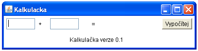
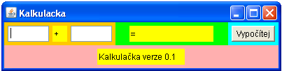

Vytvoøíme aplikaci, jejímž základem je tøída Frame (èesky rámec). Tato tøída slouží k vytvoøení základu bìžného okna (zatím bez menu, tlaèítek a jiných ovládacích prvkù). Do tohoto rámce vložíme nejprve panely (tøída Panel). Do jednotlivých panelù poté postupnì vložíme jednotlivé ovládací prvky. Z ovládacích prvkù si zatím vystaèíme s textovými políèky (tøída TextField), textovými popiskami (tøída Label) a tlaèítky (tøída Button).
Panely si mùžete barevnì zvýraznit tak, že odkomentujete (odstraníte zpìtná lomítka) z øádkù, které jsou v kódu obarveny zelenì). Tak uvidíte, jakou èást rámce jednotlivé panely zabírají a jak se jejich rozmìry pøizpùsobily vloženým ovládacím prvkùm.
V následujícím kódu si všimnìte 4 základních krokù pro zprovoznìní tlaèítka "Vypoèítej".
vypocitejButton.pravyPanel.add(vypocitejButton). Pokud v tuto chvíli aplikaci spustíme, tlaèítko "Vypoèítej" uvidíme, ale zatím nebude funkèní.vypocitejButton.addActionListener(new vypocitejButtonAL()). V parametru této metody vytváøíme instanci tøídy vypocitejButtonAL(), která je definovaná o nìkolik øádkù kódu níže.vypocitejButtonAL, která implementujeme jedinou metodu actionPerformed(ActionEvent e) rozhraní ActionListener. V tìle této metody se provede seètení èísel. Všimnìte si, že pøed seètením je nutno nejprve pøevést textové øetezce na èísla (typ Double) a po seètení zase pøevést výsledek zpìt na textový øetìzec (typ String).Podobnì jako tlaèítko "Vypoèítej" se do jednotlivých panelù pøidávají i další ovládací prvky - textová políèka (tøída TextField) a textové popisky (tøída Label). Tìmto ovládacím prvkùm zatím nepøiøadíme žádné posluchaèe událostí (v naší velmi jednoduché aplikaci je zatím nepotøebujeme).
import java.awt.*;
import java.awt.event.*;
public class Kalkulacka extends Frame {
Panel levyPanel = new Panel();
Panel stredniPanel = new Panel();
Panel pravyPanel = new Panel();
Panel dolniPanel = new Panel();
TextField prvniTextField = new TextField(5);
TextField druheTextField = new TextField(5);
Label plusLabel = new Label("+");
Label vysledekLabel = new Label("= ");
Label oprogramuLabel = new Label("Kalkulaèka verze 0.1");
Button vypocitejButton = new Button("Vypoèítej"); // vytvoøíme instanci tøídy Button (tlaèítko "Vypoèítej")
public Kalkulacka() {
super.setTitle(getClass().getName());
this.setSize(400, 100);
this.add(levyPanel, BorderLayout.WEST);
//levyPanel.setBackground(Color.ORANGE);
this.add(pravyPanel, BorderLayout.EAST);
//pravyPanel.setBackground(Color.CYAN);
this.add(stredniPanel, BorderLayout.CENTER);
//stredniPanel.setBackground(Color.GREEN);
this.add(dolniPanel, BorderLayout.SOUTH);
//dolniPanel.setBackground(Color.PINK);
levyPanel.add(prvniTextField);
levyPanel.add(plusLabel);
//plusLabel.setBackground(Color.YELLOW);
levyPanel.add(druheTextField);
stredniPanel.add(vysledekLabel);
//vysledekLabel.setBackground(Color.YELLOW);
pravyPanel.add(vypocitejButton); // umístíme tlaèítko "Vypoèítej" do pravého panelu
dolniPanel.add(oprogramuLabel);
//oprogramuLabel.setBackground(Color.YELLOW);
vypocitejButton.addActionListener(new VypocitejButtonAL()); // pøiøadíme tlaèítku posluchaèe událostí (instanci tøídy VypocitejButtonAL)
this.addWindowListener(new WindowAdapter() {
public void windowClosing(WindowEvent e) {
System.exit(1);
}
});
}
class VypocitejButtonAL implements ActionListener {
public void actionPerformed(ActionEvent e) { // implementujeme metodu actionPerformed(), v jejímž tìle se provede seètení èísel
double a = Double.parseDouble(prvniTextField.getText());
double b = Double.parseDouble(druheTextField.getText());
vysledekLabel.setText(String.valueOf(a + b));
}
}
public static void main(String[] args) {
new Kalkulacka().setVisible(true);
}
}
import java.awt.*;
import java.awt.event.*;
public class Kreslitko extends Frame {
Obdelnik obdelnik = new Obdelnik(50, 80);
Platno platno = new Platno();
Panel panel = new Panel();
public Kreslitko() {
super.setTitle(getClass().getName());
this.add(platno, BorderLayout.CENTER);
this.add(panel, BorderLayout.SOUTH);
Button zvetsiBT = new Button("Zvìtši");
panel.add(zvetsiBT);
zvetsiBT.addActionListener(new zvetsiBTAL());
this.setSize(800, 600);
this.addWindowListener(new WindowAdapter() {
public void windowClosing(WindowEvent e) {
System.exit(1);
}
});
}
class zvetsiBTAL implements ActionListener {
public void actionPerformed(ActionEvent e) {
obdelnik.setDelka(200);
obdelnik.setSirka(200);
platno.repaint();
}
}
class Platno extends Canvas {
public void paint(Graphics g) {
g.setColor(Color.blue);
g.fillRect(100, 100, obdelnik.getSirka(), obdelnik.getDelka());
}
}
public static void main(String[] args) {
new Kreslitko().setVisible(true);
}
}
class Obdelnik {
private int horniRohX=50;
private int horniRohY=50;
private int delka;
private int sirka;
public Obdelnik() {
this.delka = 100;
this.sirka = 100;
}
public Obdelnik(int delka) {
this.delka = delka;
this.sirka = delka;
}
public Obdelnik(int delka, int sirka) {
this.delka = delka;
this.sirka = sirka;
}
public int getDelka() {
return delka;
}
public int getSirka() {
return sirka;
}
public void setDelka(int delka) {
this.delka = delka;
}
public void setSirka(int sirka) {
this.sirka = sirka;
}
}
Cvièení: